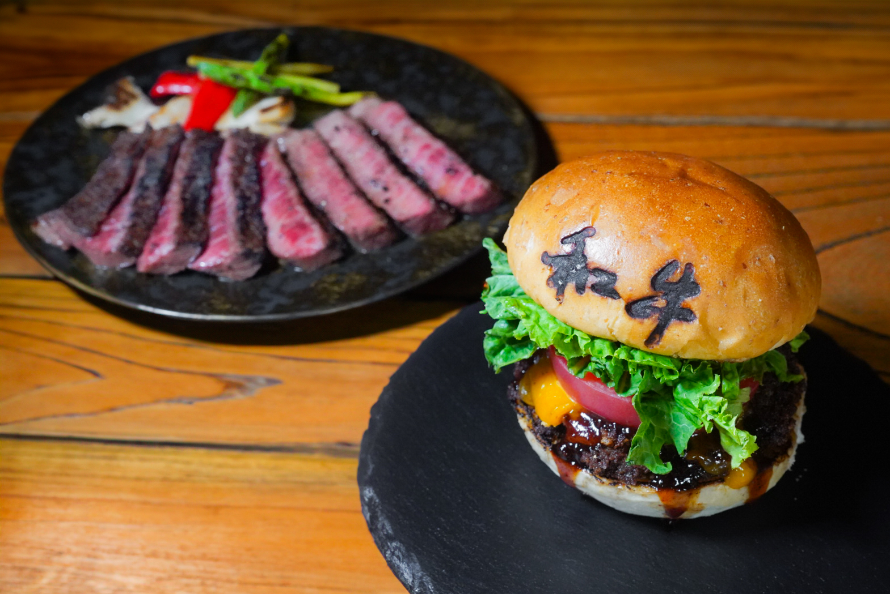

本物の和牛を、世界へ。
Our story began in 1962. The first generation started as a wagyu merchant — a craftsman who faced cattle, judged the meat, honed his skill. Across five generations, the family business grew into wholesale, butcher shops, and restaurants. I was raised alongside meat as the fifth.
In my thirties, I visited America. The "WAGYU" I encountered there was not what I knew — Australian and American cattle were being sold as wagyu, and people smiled saying "this is wagyu?". That moment shook me. The wagyu spreading across the world wasn't the real thing.
So I decided, as the fifth generation, to deliver real wagyu to the world again — starting from the heart of Japan, Tokyo. I visit farms across the country and select, by the whole head, only the wagyu I truly accept. Not the over-fattened industrial kind. Healthy wagyu with deep umami in the red meat itself — that, to me, is real.
For safety and peace of mind, I personally choose wagyu processed at halal-certified slaughterhouses — so guests of any background can enjoy it without worry. Regardless of nationality, religion, age, or gender, this is wagyu anyone can sit down to.
"Real wagyu, for everyone in the world." — 五代目 · Godaime Wagyu Tokyo Owner
仕入れから調理まで、ムスリムフレンドリー。